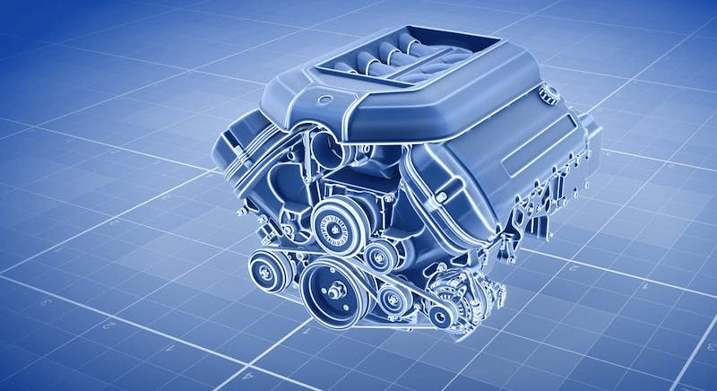
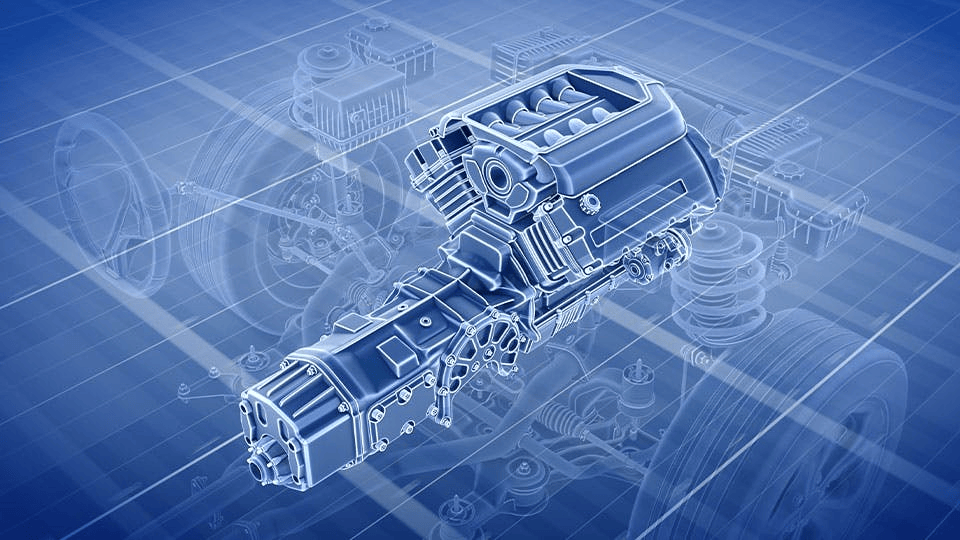

Mantenimiento Básico
Aceite para motor
¿Por qué tiene que cambiar el aceite?
No hacer los cambios de aceite de rutina aumenta el riesgo de dañar los componentes del motor. Por ese motivo, el aceite se debe cambiar regularmente
- El aceite de motor actúa como un colchón entre las partes móviles. Las temperaturas extremas que se pueden alcanzar durante el uso normal reducen la viscosidad del aceite.
- El aceite de motor actúa como un colchón entre las partes móviles. Las temperaturas extremas que se pueden alcanzar durante el uso normal reducen la viscosidad del aceite.
- Los filtros de aceite capturan los residuos no deseados y nocivos, así como los derivados del proceso de combustión.
- Cambiar el filtro de aceite en cada cambio del aceite ayudará a garantizar que circule aceite limpio en el motor.
- Consulte el manual del propietario para ver las recomendaciones del fabricante sobre los grados de aceite y los intervalos del cambio de aceite.
Sistema de dirección
El líquido para dirección asistida es un aceite hidráulico que se oxida, como cualquier otro aceite. Al oxidarse, se vuelve más resistente al flujo y su capacidad de proteger las partes internas se deteriora.
- Limpie la tapa del reservorio de líquido para evitar que caigan contaminantes en el interior del reservorio.
- Desenrosque la tapa y fíjese si el nivel de líquido llega a la marca que dice “lleno”.
- Si no es así, llénelo con el líquido recomendado por el fabricante de su auto como se indica en el manual del propietario, vuelva a colocar la tapa y revise si el sistema tiene alguna pérdida.
- Compruebe el color del líquido. Si se ve marrón, hay que cambiarlo.
Sistema de frenos
El sistema de frenos suele quedar olvidado cuando se hace el mantenimiento del vehículo, pero es el primer paso para garantizar la seguridad vehicular y por eso, debería ser una prioridad. El mantenimiento apropiado no solo previene una falla completa del sistema de frenos sino que, además, le permitirá ahorrar dinero al prevenir la corrosión prematura de las piezas internas y la avería del equipo. Use siempre el tipo de líquido de frenos designado en la tapa del reservorio de frenos o en el manual del propietario.
Cómo revisar el nivel de líquido de frenos:
- Ubique el reservorio de líquido de frenos; está bajo el capó hacia la parte de atrás del compartimento del motor, del lado del conductor.
- Limpie la suciedad y polvo de la carretera del reservorio y su tapa.
- Saque la tapa y agregue líquido hasta que el nivel alcance la marca de “lleno” o “máx” que se encuentra al costado del reservorio.
- Vuelva a colorar la tapa.
Transmisión
Los niveles de líquido de transmisión se deben revisar en cada cambio de aceite. Si el nivel es bajo, la transmisión tiene una pérdida, ya que el líquido no se consume durante el funcionamiento.
Cómo revisar el líquido de transmisión automática:
- Cuando revise la transmisión, el auto deberá estar estacionado sobre una superficie uniforme con el motor en marcha.
- El asa de la varilla de medición es roja en la mayoría de los autos más nuevos.
- Retire la varilla de medición y límpiela con una servilleta de papel.
- Vuelva a colocar la varilla de medición en la tubería y sáquela por completo para tener una lectura exacta del nivel de líquido.